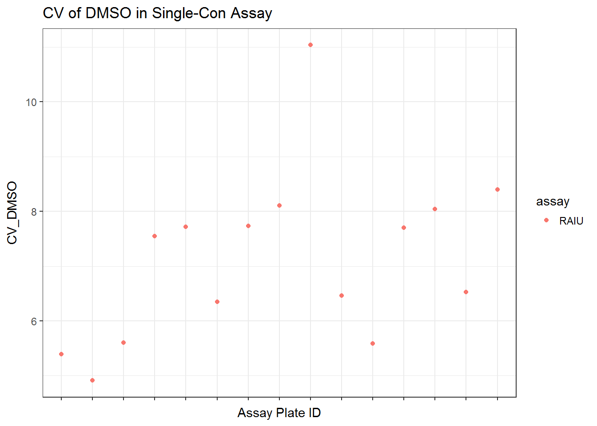
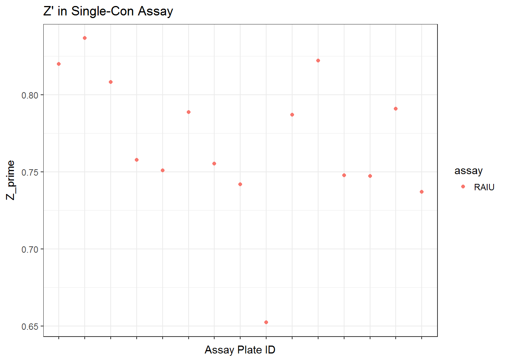
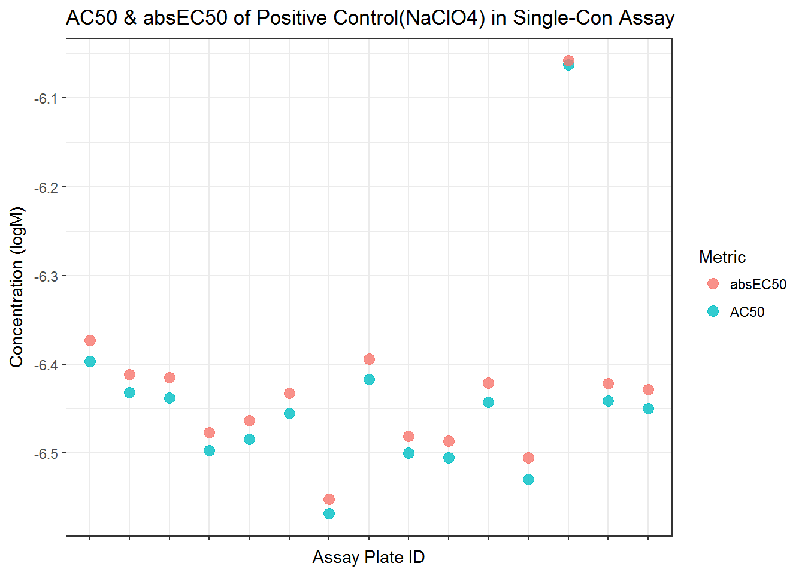
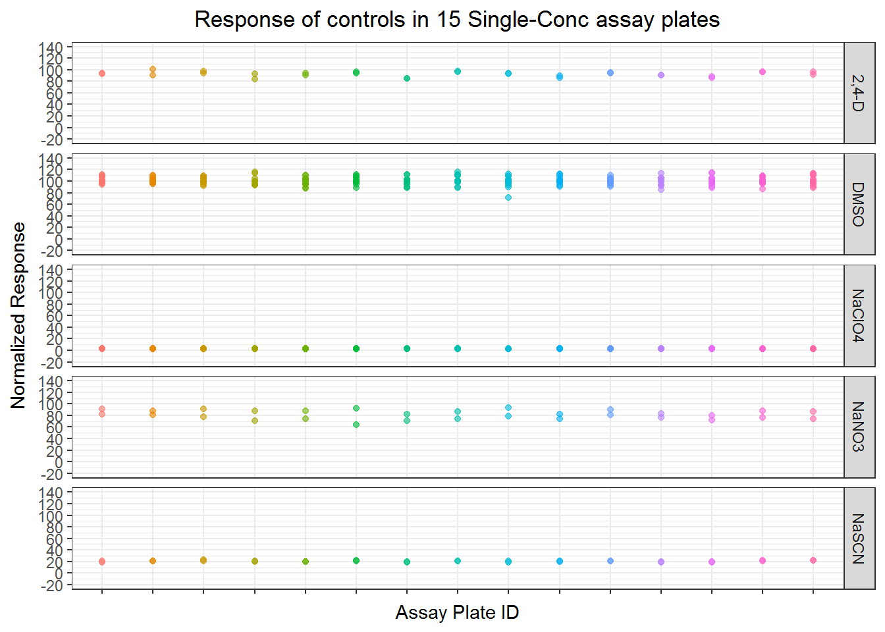
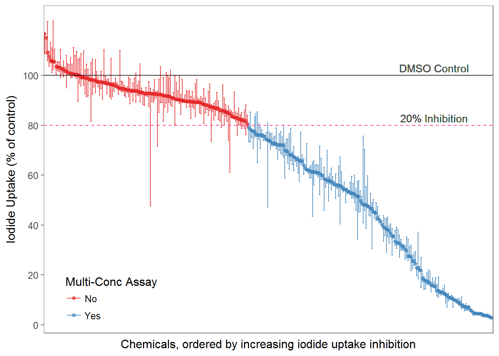

4 Single-Conc Results Analysis
rm(list=ls())
library(plotly)
library(ggthemes)
library(stringr)
library(readxl)
library(grid)
library(gridExtra)
library(devtools)
# load_all("./toxplot first pub ver")
load_all("./toxplot")
library(tidyverse)
# session_info()4.1 Define basic assay info
#define the names of the primary and toxicity assay.
#names should match what's provided in the <assay> column of the input dataframe
assay_info <- list(
prim_assay = "RAIU",
toxi_assay = "Cytotox"
)4.2 Data Import
dt_sc <- read_csv("./input data files/NIS_ph1_v2_sc_lvl0_for_tcpl.csv")4.3 Normalization
Each sample well is normalized as percentage of the DMSO median on each plate.
dt_sc_norm <- toxplot::normalize_per_plate(dt_sc, nctrl = "DMSO")4.4 Threshold of Significance
Now calculating 3bMAD and 3sigma value for the DMSO control in the single concentration assay as a whole.
sig_cutoff_sc <- dt_sc_norm %>%
filter(spid == "DMSO") %>%
summarize(bMAD = mad(nval_median, na.rm=TRUE),
three_bMAD = 3*mad(nval_median, na.rm=TRUE))
knitr::kable(sig_cutoff_sc, digits = 2) | bMAD | three_bMAD |
|---|---|
| 6.83 | 20.5 |
4.5 QC of Single-conc assay
Assay quality control measures were calculated by each 96-well plate.
To assesss the quality of assay for each 96 well plate, the following metrics were used:
- CV of DMSO controls
- Z’ score
The negative control DMSO wells’ raw readings were used to calculate mean, standard deviation and CV for each plate.
Z’ factor is calculated as follows: \[Z'=1-\frac{3\sigma_{positive\ control} + 3\sigma_{DMSO\ control}}{|\mu_{positive\ control} - \mu_{DMSO\ control}|}\]
Note that in Z’ calculation, because we only had one well of cytotox positive control, therefore sigma wasn’t calculatable. Hence the Z’ calculated for cytotox is unusable.
qc_sc <- qc_per_plate(dt_sc_norm, assay_info, resp = "nval_median")
qplot(unique_id, CV_DMSO, data = qc_sc$qc, color = assay) +
ggtitle("CV of DMSO in Single-Con Assay") +
xlab("Assay Plate ID") +
scale_x_discrete(labels = NULL) +
theme_bw()
qplot(unique_id, Z_prime, data = qc_sc$qc, color = assay) +
ggtitle("Z' in Single-Con Assay") +
xlab("Assay Plate ID") +
scale_x_discrete(labels = NULL) +
theme_bw()
4.6 QC Summary of Single-Con assay
library(psych)
qc_sc_t <- qc_sc$qc %>%
dplyr::select(CV_DMSO, Z_prime) %>%
describe
knitr::kable(qc_sc_t, digits = 2, caption = "Summary Single-Con Assay QC Metrics")| vars | n | mean | sd | median | trimmed | mad | min | max | range | skew | kurtosis | se | |
|---|---|---|---|---|---|---|---|---|---|---|---|---|---|
| apid* | 1 | 15 | NaN | NA | NA | NaN | NA | Inf | -Inf | -Inf | NA | NA | NA |
| CV_DMSO | 2 | 15 | 7.14 | 1.56 | 7.55 | 7.01 | 1.52 | 4.91 | 11.04 | 6.13 | 0.68 | 0.19 | 0.40 |
| Z_prime | 3 | 15 | 0.77 | 0.05 | 0.76 | 0.77 | 0.04 | 0.65 | 0.84 | 0.18 | -0.72 | 0.40 | 0.01 |
All single-con QC metrics in a table
knitr::kable(dplyr::select(qc_sc$qc, apid, CV_DMSO, Z_prime),
digits = 2,
col.names = c("Plate", "CV of DMSO", "Z'"),
caption = "QC metrics in Single-Conc Screening")| Plate | CV of DMSO | Z’ |
|---|---|---|
| TP0001498_rep1 | 5.40 | 0.82 |
| TP0001498_rep2 | 4.91 | 0.84 |
| TP0001498_rep3 | 5.61 | 0.81 |
| TP0001499_rep1 | 7.55 | 0.76 |
| TP0001499_rep2 | 7.72 | 0.75 |
| TP0001499_rep3 | 6.35 | 0.79 |
| TP0001500_rep1 | 7.74 | 0.76 |
| TP0001500_rep2 | 8.11 | 0.74 |
| TP0001500_rep3 | 11.04 | 0.65 |
| TP0001501_rep1 | 6.46 | 0.79 |
| TP0001501_rep2 | 5.59 | 0.82 |
| TP0001501_rep3 | 7.70 | 0.75 |
| TP0001502_rep1 | 8.04 | 0.75 |
| TP0001502_rep2 | 6.53 | 0.79 |
| TP0001502_rep3 | 8.40 | 0.74 |
4.6.1 Single-Con Positive Control QC
## model single-con controls on each plate
sc_pos_raiu <- dt_sc_norm %>%
filter(spid == "NaClO4") %>%
mutate(spid = paste(spid, apid)) # change spid to distinguish NaClO4 on each plate.
sc_raiu_pos_md <- toxplot::fit_curve_tcpl(sc_pos_raiu, assay_info = list(prim_assay = "RAIU", toxi_assay = NULL))## Processing 15 samples(spid)....
## NaClO4 TP0001498_rep1 ||NaClO4 TP0001498_rep2 ||NaClO4 TP0001498_rep3 ||NaClO4 TP0001499_rep1 ||NaClO4 TP0001499_rep2 ||NaClO4 TP0001499_rep3 ||NaClO4 TP0001500_rep1 ||NaClO4 TP0001500_rep2 ||NaClO4 TP0001500_rep3 ||NaClO4 TP0001501_rep1 ||NaClO4 TP0001501_rep2 ||NaClO4 TP0001501_rep3 ||NaClO4 TP0001502_rep1 ||NaClO4 TP0001502_rep2 ||NaClO4 TP0001502_rep3 ||
## Curve Fitting Completed!
## Calculation time: 2.8 secssc_raiu_pos_sum <- toxplot::summary_tcpl(sc_raiu_pos_md)
##plot AC50 for pos controls together
st <- sc_raiu_pos_sum %>%
dplyr::select(AC50_prim, absEC50_prim, spid) %>%
rename(AC50 = AC50_prim, absEC50 = absEC50_prim) %>%
gather(key=Metric, value= value, AC50, absEC50)
ggplot(st, aes(spid, value)) +
geom_point(aes(color=Metric), alpha=0.8, size=3)+
#facet_grid(Metric~., scale="free")+
scale_x_discrete(labels=NULL)+
ggtitle("AC50 & absEC50 of Positive Control(NaClO4) in Single-Con Assay")+
xlab("Assay Plate ID") +
ylab("Concentration (logM)") +
theme(plot.title = element_text(hjust=0.5)) +
theme_bw() 
#theme(legend.position = "none")
#summary
library(psych)
sc_pos_sum_raiu <- sc_raiu_pos_sum %>%
dplyr::select(AC50_prim, absEC50_prim) %>%
rename(AC50=AC50_prim, absEC50 = absEC50_prim) %>%
describe
knitr::kable(sc_pos_sum_raiu, digits = 2, caption="Summary of single-con RAIU positive control IC50s")| vars | n | mean | sd | median | trimmed | mad | min | max | range | skew | kurtosis | se | |
|---|---|---|---|---|---|---|---|---|---|---|---|---|---|
| AC50 | 1 | 15 | -6.44 | 0.11 | -6.45 | -6.46 | 0.05 | -6.57 | -6.06 | 0.51 | 2.28 | 5.19 | 0.03 |
| absEC50 | 2 | 15 | -6.42 | 0.11 | -6.43 | -6.44 | 0.05 | -6.55 | -6.06 | 0.49 | 2.18 | 4.85 | 0.03 |
4.6.2 Single-Con Controls
#only take the NaClO4 wells at 1E-4M
s1 <- dt_sc_norm %>% filter(wllt!="t", spid!="NaClO4")
s2 <- dt_sc_norm %>% filter(spid=="NaClO4", conc== 1E-4)
s3 <- bind_rows(s1, s2)
sc_ctrl_sum <- s3 %>%
filter(wllt !="t") %>%
mutate(resp=nval_median) %>%
#rename("NaClO4(1E-4M)F"=NaClO4) %>%
group_by(spid) %>%
summarize(mean = mean(resp),
sd = sd(resp),
min = min(resp),
max = max(resp),
CV = sd/mean*100)
knitr::kable(sc_ctrl_sum, digits =2, caption="Single-Con control summary stats")| spid | mean | sd | min | max | CV |
|---|---|---|---|---|---|
| 2,4-D | 92.41 | 4.24 | 83.91 | 100.71 | 4.59 |
| DMSO | 100.63 | 7.11 | 71.69 | 116.19 | 7.06 |
| NaClO4 | 2.85 | 0.36 | 2.08 | 3.84 | 12.60 |
| NaNO3 | 81.25 | 7.56 | 63.47 | 93.21 | 9.31 |
| NaSCN | 20.64 | 1.12 | 18.56 | 23.05 | 5.41 |
# plot all sc controls
ggplot(filter(s3, wllt !="t"), aes(apid, nval_median)) +
geom_point(aes(color=apid),alpha=0.6) +
facet_grid(spid~.) +
scale_y_continuous(limits= c(-20,140), breaks= seq(from=-20, to=140, by=20)) +
#scale_x_discrete(breaks=NULL)+
scale_x_discrete(labels=NULL)+
ylab("Normalized Response") +
xlab("Assay Plate ID")+
ggtitle("Response of controls in 15 Single-Conc assay plates")+
theme_bw()+
theme(legend.position = "none") +
theme(plot.title=element_text(hjust=0.5))
4.7 Visualize the single concentration data
A total of 310 chemical samples was tested in the single-con and 169 were further tested in multi-concentration.
The plot below showed the median, max, and min value for each tested chemical, and coloring shows which chemical were carried on to the multi-con assay. Because the assay has 3 replicates, so all three replicate’s data are actually plotted in this figure.
#calculate median, max and min value
sc_median <- dt_sc_norm %>% ungroup() %>% filter(str_detect(dt_sc_norm$spid, "^TP*")) %>%
mutate(welltype = "sample") %>%
group_by(pid, spid) %>%
summarize(
median = median(nval_median),
up_range = max(nval_median),
lo_range = min(nval_median),
range = max(nval_median) - min(nval_median)
) %>%
ungroup() %>%
mutate(mc_test = ifelse(median < 80, "Yes", "No")) %>%
arrange(median)
#saveRDS(sc_median, "../../NIS project Phase II/Phase 2 data analysis/ph1_single.rds")
##Plot single con median+range plot.
library(RColorBrewer)
fig2 <- ggplot(sc_median, aes(x=reorder(spid, -median), y=median, color=mc_test)) +
geom_point(size=1.5, alpha=0.6) +
geom_errorbar(aes(ymax=up_range, ymin=lo_range), alpha=0.8, size = 0.5) +
xlab("Chemicals, ordered by increasing iodide uptake inhibition") +
ylab("Iodide Uptake (% of control)")+scale_x_discrete(breaks=NULL) +
#ggtitle("Median and Response of Test Chemicals")+
geom_hline(yintercept = 80, linetype="dashed", color="violetred1") +
geom_hline(yintercept = 100, alpha=0.8) +
geom_text(data = NULL, x = 270, y = 103, label = "DMSO Control", color = "grey30")+
geom_text(data = NULL, x = 270, y = 83, label = "20% Inhibition", color = "grey30")+
scale_y_continuous(breaks = seq(from = 0, to =100, by=20))+
scale_color_brewer(palette="Set1", name= "Multi-Conc Assay", labels= c("No", "Yes")) +
theme_few(base_size = 12) +
theme(legend.position = c(0.15, 0.1), legend.background = element_blank())
fig2
#ggsave("./output plots/fig2.tiff", fig2, dpi = 900, width = 7, height = 5, compression = "lzw")